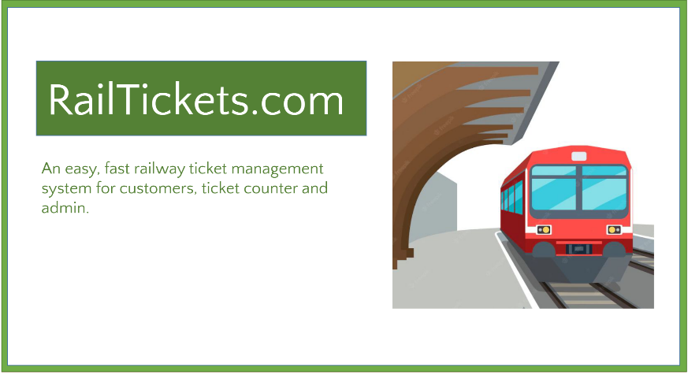
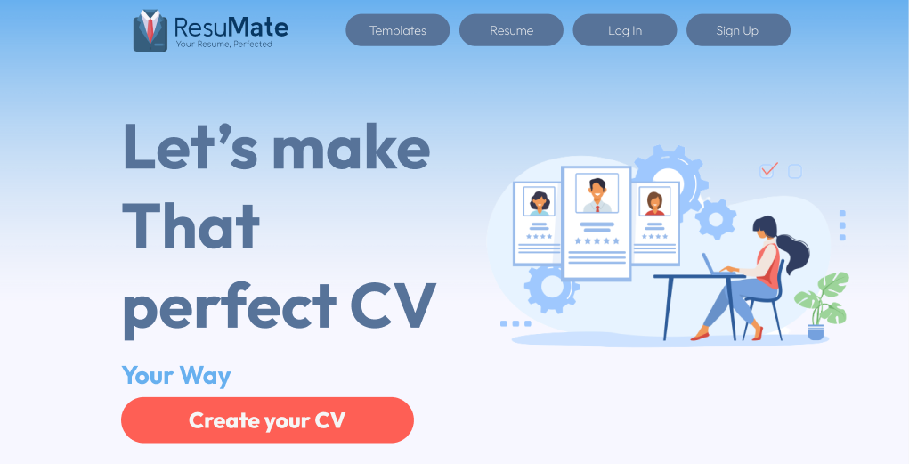

About Me
Hi! I'm Maruf, a sophomore Software Engineering student at IUT with a strong programming foundation. Passionate about problem-solving in C++ and web development using the MERN stack. I strive to create innovative solutions and excel in software development. Alongside software engineering, I have a keen interest in Machine Learning.
My journey began with C++, where I developed skills in logical thinking and algorithmic design. I enjoy breaking down complex problems and creating efficient solutions. In addition to C++, I am well-versed in web development using the MERN stack (MongoDB, Express.js, React, and Node.js). Currently, I am studying various ML algorithms and frameworks.
Skills
- Programming Languages: C++, JavaScript
- Web Development: HTML, CSS, React, Node.js, Express.js
- Database: MongoDB, MySQL
- Tools: Git, GitHub, VS Code, Chrome DevTools
Projects
The Red Owl

- Built with MERN stack (MongoDB, Express.js, React, and Node.js).
- Developed "The Red Owl," a website that facilitates connection between students and teachers through individual profiles.
- Implemented features allowing users to share thoughts and ideas through blog writing, fostering a collaborative learning environment.
- Created an event section within the website, enabling users to post and promote campus events, enhancing community engagement.
- Utilized web development skills to design and code the website, ensuring an intuitive user interface and seamless navigation.
- Incorporated user authentication and privacy settings to ensure data security and protect user profiles.
- Conducted thorough testing and debugging to ensure the website's functionality and responsiveness across different devices and browsers.
- Demonstrated strong project management skills by coordinating tasks, tracking progress, and effectively communicating with team members.
railtickets.com

- Built with HTML, CSS, JavaScript, Bootstrap, PHP, MySQL.
- Developed "railtickets.com," a user-friendly website enabling users to conveniently purchase rail tickets online.
- Implemented secure online payment functionality using SSLCommerz as the payment gateway, ensuring a safe and seamless transaction process.
- Designed and developed an intuitive admin panel to manage and update train information, routes, classes, and fares.
- Utilized web development skills to design and code the website, ensuring an intuitive user interface and seamless navigation.
- Incorporated user authentication and privacy settings to ensure data security and protect user profiles.
- Conducted thorough testing and debugging to ensure the website's functionality and responsiveness across different devices and browsers.
- Demonstrated strong project management skills by coordinating tasks, tracking progress, and effectively communicating with team members.
ResuMate

- Built with React.
- Developed "ResuMate," a user-friendly website that enables students to create professional resumes quickly and conveniently online.
- Implemented an intuitive interface allowing students to input their information and select from a variety of resume templates.
- Designed and developed a resume generation feature that dynamically generates a formatted resume based on the provided information.
- Incorporated a PDF export functionality, enabling students to download their resume as a PDF file for offline use.
- Utilized web development skills to design and code the website, ensuring an intuitive user interface and seamless navigation.
- Conducted thorough testing and debugging to ensure the website's functionality and responsiveness across different devices and browsers.
- Demonstrated strong project management skills by coordinating tasks, tracking progress, and effectively communicating with team members.
Contact
Let's connect!